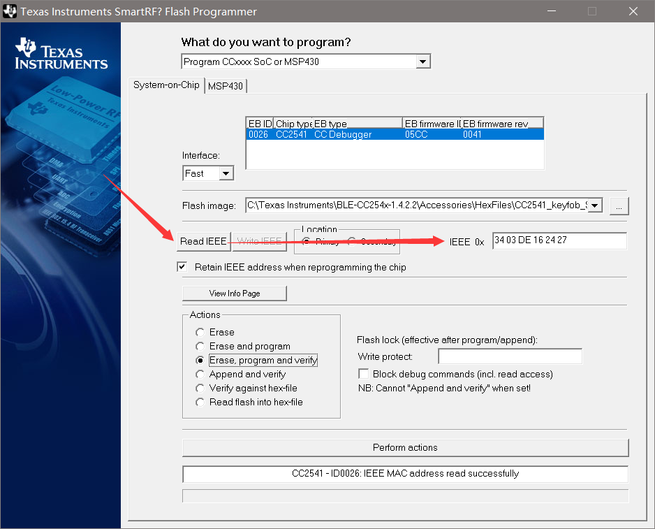
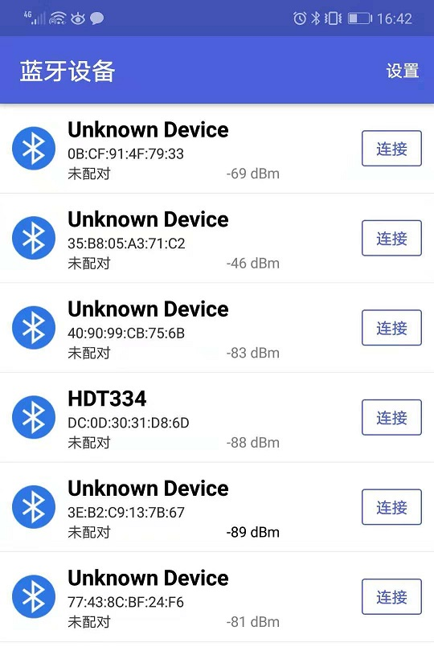
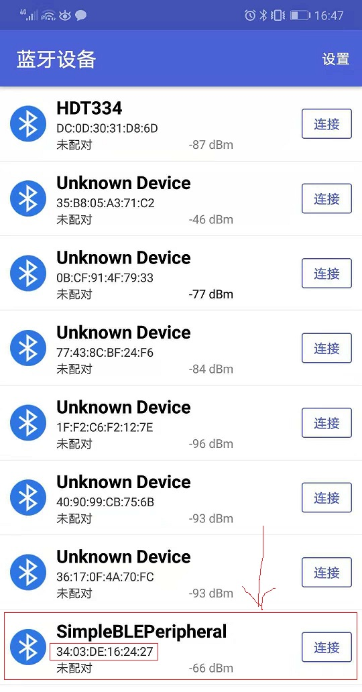
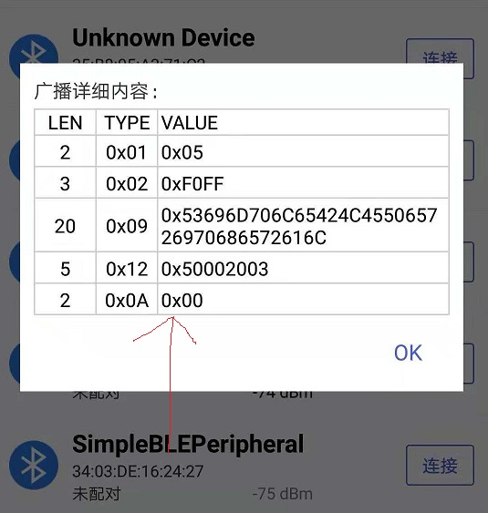
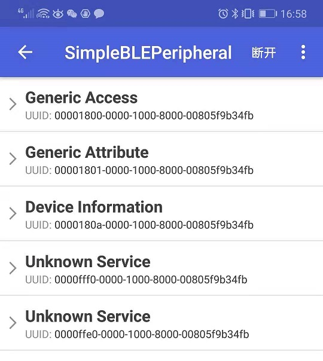
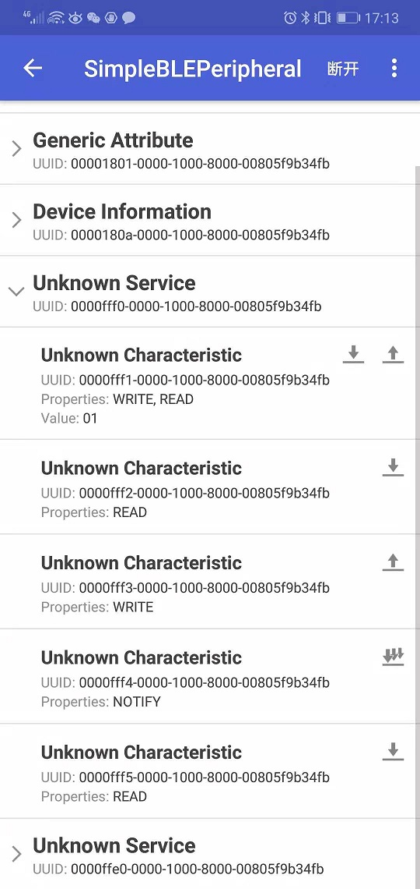
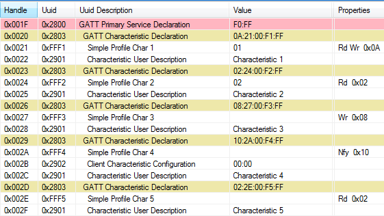
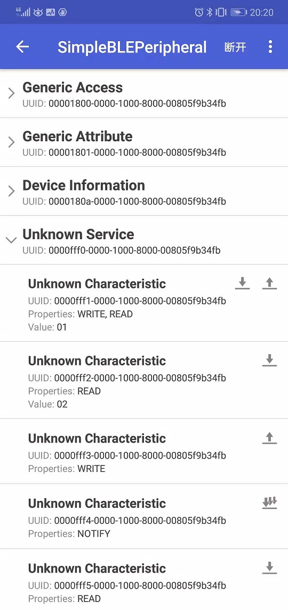

Android BLE Debuger
使用Android BLE工具连接测试CC2541 BLE
获取蓝牙地址

Android BLE Debuger Install
BLE Scanner比blecore更好用
https://github.com/fszeng2011/blecore
华为手机可以直接在AppGallery检索安装：
BLE Debugger

使用方法
烧录：
C:\Texas Instruments\BLE-CC254x-1.4.2.2\Accessories\HexFiles\CC2541_SmartRF_SimpleBLEPeripheral.hex按下
S1按键，启动程序，一定要按下这个按键，然后Android软件能够检测到设备；
获取到的蓝牙广播：
连接设备，查看Profile：
获取、修改属性：

Simple GATT Profile Characteristic Table
BTool Show:
BLECORE Show:
